1928—The New-Way Course in Millinery and Hat Design
Lesson 21—Making Hats for Children
Making Hats for Children
There is nothing radically different in making a hat for a child. If you know how to make a hat for yourself, you will have no difficulty whatever in making attractive little hats for the youngsters. However, there are certain important features you must bear in mind in designing and making hats for young children—and others that have important bearings on the making of hats for misses.
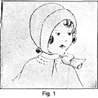Children begin to wear hats when they are about three or four years old, or sometimes younger. Until that time they wear neat little bonnets like Fig. I. These bonnets should fit perfectly, and should not be too loose nor too tight. They are usually white or pale blue or pink in color, for these colors are most restful to the infant's eyes, and besides pink and white are baby colors, anyhow. These bonnets should be trimmed very simply, and lined with soft mull or silk. There should be nothing that can irritate the tender baby skin either on the cap or on the trimmings.
When the youngster begins to wear a hat, mother is naturally proud—and often forgets that the little head still needs protection. Harsh straw hats, irritating flowers and coarse materials should be avoided. At the present time, hats for small children are rather plain; they are not trimmed so much with rosettes of chiffon, crepe or silk as they were years ago. However, this is perfectly permissible if you care to make them more elaborate. For every day wear other types that I have pictured are far more practical with most types of clothing.
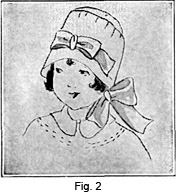Of course, if the little lady is to take an important part in a wedding ceremony, her hat will be more elaborate and will be trimmed with ribbons or dainty appropriate flowers.
As the child gets older the type of hat changes somewhat. It begins to be more like those worn by big sister and mother. Flowers may be used on hats if they are well chosen and not overdone. Simple ribbon trimmings such as bows or a band and streamers are very attractive. If the child can have several hats, a pretty summer one may be trimmed with small flowers and very fine fern. Feathers and elaborate trimmings are absolutely in bad form, and should not be worn by young children.
Even the young miss should avoid any ostentation in headgear. Up to the age of fourteen or perhaps older, the hat should be simple and comfortable, boasting neither feathers nor fancies, but the trimming should be in good taste. Flowers may be used if carefully chosen and artistically applied. Bows are neat and sometimes the hat is made exceptionally plain with a band around the crown. The tam-o-shanter is ideal for school wear, and the mushroom hat is most appropriate for dress-up occasions. But no matter what the type of hat is, the keynote should be simplicity.
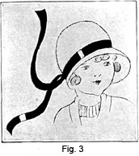The hat shapes most commonly used for children are of the blocked variety. By this we mean they are hats made and shaped in the factory and purchased ready-to-wear. Fig. 3 will give you an idea of this kind of hat, though I am sure you have seen plenty of them. These hats are sometimes made of straw or very often of felt. The only trimming is a band of ribbon around the crown, with a small bow at the side or the ribbon is sometimes allowed to hang down the back to form streamers.
The blocked hats may be purchased untrimmed, and any desired, but still appropriate trimming added. If the hat is of straw a dainty bunch of flowers may be applied or as already mentioned the ribbon with streamers is particularly attractive. It is often a saving of time to purchase children's hats in this manner.
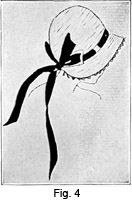Fabric hats for children are made very much in the same manner as fabric hats for older people. The poke bonnet, or the hat shown in Fig. 4 is really quite simple to make. The shape is made exactly as taught in an earlier lesson, on shapes for adults. It may be covered with velvet or silk in the same way as our own hats are covered, and the trimmings are applied with the same regard for harmony and good taste. The routine of the work is precisely the same except that the facing on the child's hat is usually a soft, draped facing instead of the stretched type. This does not always hold true, however, so if you desire a stretched facing in preference to the soft draped kind, it will be perfectly all right to apply it in this way.
Making children's hats devolves itself consequently into the very simple matter of learning what shapes are most youthful, what materials are most appropriate, and what types of trimmings are most flattering to the little faces.
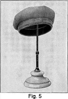As for the little boy, you will find that it is a much wiser plan to purchase his hats ready-made. It is a simpler way for these hats are usually made of very heavy material. Fig. 5 shows one style that is appropriate for the small boy. However, there are several types of hats for boys that can be easily made at home, and that offer a profitable "side line" if you con-_ template opening your own millinery shop.
There is, for instance, the "roly-poly" hat for the very young person of three or four. In the summer, it is made of pique, linen or chambray to match the suit. In winter it is made of felt or tweed. The crown is made in four sections coming together in a point at the top. The brim of the hat is made in two pieces, and a covered button is usually used for trimming.
For the boy who is a little older, the sailor cap is appropriate. It is made with an interlining to help it to roll smoothly. A thin layer of wadding is used. For inside the head band, fold a piece of lining over wrapping paper and join the lining to this head band. The lining should be stitched to the hat around the bottom.
Making the Tam-O-Shanter
There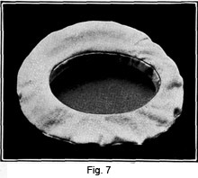 are 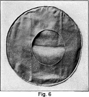several types of tams, as they are today commonly called. The true Scotch tam is made of two circular pieces of cloth, the upper being a plain circle and the lower having the headsize cut into it. Instead of the band or finish coming below this opening, the finish extends up into the cap giving the appearance of having no head band. Fig. 7 shows the finished headsize of a tam. This is the true Scotch hat, and the headsize is never cut exactly in the center but a little to one side. This gives the hat a rakish appearance—but the kiddies look so delightful in them.
Do not confuse the tam for children, with the tam-o-shanter crown used on ladies' hats. The latter is made over a shape or foundation which holds the shape in position. The tams for children are never made over a foundation, while without a foundation a tam-o-shanter crown would never be appropriate for a woman's hat. Let us see exactly how the tam-o-shanter for the child is made.
1. Select your material. Plaids are attractive for children as they do not soil easily.
2. Cut two circles, each about 12 in. in diameter. The size of these circles may vary according to the size of the child's head.
3. Mark the headsize in the piece that is to form the under part of the crown. Make it an oblong opening not perfectly round.
4. Now measure the child's head. Pretending that the measure is 21 inches, the diameter of the circle for the headsize would be seven inches minus a very small fraction.
5. Place your circle of cloth on the table, and mark a line straight through the circle from center front to center back. Use tailors' chalk.
6. Proceed to mark another line through the center from side to side.
7. As the headsize must not be perfectly round, make the headsize eight inches from the center of the front to the center of the back; and make it six inches from side to side.
8. Three inches from the center on each side of the line running from the front to the back, make a small mark with tailors' chalk.
9. Do the same on each side of the line running from side to side, but this time make it four inches from the center.
10. Connect these points with a curved line.
11. If your line is properly made, it will measure 21 inches. One inch inside of this line draw another curved line every point of which is exactly one inch from the outer circle. The outer circle is the headsize; the inner circle is the line on which to cut the opening. Fig. 6 shows this.
12. Proceed to cut this opening and slash the edge towards the headsize line in order that the hat will fit comfortably on the child's head. It is wise, at this point, to fit the hat and see that it is just right.
13. Now make a line of very small bastings at the headsize line with heavy basting thread, and fasten well. This marks the headsize line, and keeps it from stretching. Be sure to handle your work with care, as you are working on bias material and you are very likely to stretch the material if you are not careful.
14. The two sections may be put together with a plain seam or a cord or piping may be used. For a plain seam place the right sides of both pieces together, being sure that the grains of the cloth run in the same way. Baste carefully a small even seam all around the edge, and to this line baste a narrow tape. Stitch this seam by machine, remove the bastings and turn the cap through to the right side.
15. Now draw the seam out so the stitching comes directly at the edge of the cap. Baste in position and press very lightly, placing a cloth over the material to protect it.
16. Now make your band for the headsize. Cut a strip of tailor's canvas or buckram not over an inch and a half wide and long enough to fit the child's head. In this case it is 21 inches. Allow enough to lap and finish—about an inch at each end.
17. Lap over and join.
18. Cut a strip of the cap material wide enough to cover this and lap over the edges at least one-half inch.
19. Join this in a circle and cover the headsize band, basting the material neatly and firmly in place.
20. With the seam at the center of the back, pin the cap to this band and be sure the headsize just matches the edge of the band. Baste in place.
21. The slashes that have been cut inside the headsize of the cap will allow the material to fit flat against the band. After it is basted in place, a line of stitching may be run along the top of the band and one at the bottom.
22. Make a lining exactly like the cap and put inside with the seams against the seams of the cap.
23. Baste in position and with a straight piece of material finish the inside of the head band.
24. To finish, trim with a tassel, a small pompon or a small bow of ribbon. If you use a tassel or pompon place it on the top of the hat; a ribbon is applied to the headsize band and the ends hang down over the hair.
If this is to be a true Scotch tam, the headsize band will extend up into the cap instead of coming down over the head as shown in Fig. 7. If the edge of the cap is to be corded, make the cord by cutting a bias strip of material, using the cutting gauge on the scissors to gauge the width. Set the gauge on C. Cover a small cord with the material and baste the cord firmly in position before applying to the cap. When the cord is firmly fixed in its casing, baste the raw edge of the cord covering exactly even with the edge of one section of the crown, having the cord on the right side of the crown material. Baste the two sections together, making the line of stitching as close to the cord as possible. Turn the cap through to the right side and finish exactly as the plain tam is finished.
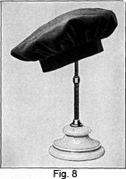The headsize measure which is taken on the child's head is the circumference of the circle. The diameter will be approximately one-third of this measure. We take one-third of the head-size measure which gives us the diameter of the circle. But as it is to be an oblong instead of a circle, the diameter is longer from front to back, and the amount added to it is subtracted from the diameter from side to side.
Other tams for children are made by cutting a circle of material large enough to make the top of the crown and double back on the underside of the headsize. The material is gathered or pleated and joined to the headsize band just as the flat tam is joined. A "cap of this kind is usually cut about eighteen inches in diameter, but may vary in accordance with the size of the child's head.
Hats to Match Dresses
Every mother desires to dress her little girl just as nice as she possibly can. She loves to have her friends compliment her on the attractive dress or hat she has made. We are now going to suggest ways of making little hats to match attractive play clothes.
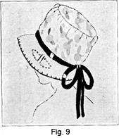Fig. 9 would look just ever so neat with a little dress made of the same material and trimmed with white or the predominating color in the figured material. I would suggest that you make a buckram or crinoline frame which would exactly fit the little head. This particular hat is made with the round crown drape, strip around the crown and a circle applied at the top before the bias part is sewed on. The brim may be made to roll down or up just as you prefer. The poke bonnet shape is youthful and makes up very well in gingham or printed cotton materials.
It should not be necessary for me to go into a detailed explanation of how to cover brims and crowns for this has been taken up so thoroughly in an earlier lesson. A dainty design may be embroidered on one or both sides of the brim, especially if the brim is covered with plain material. The edge is neat if finished with the blanket stitch done in black embroidery thread and a ribbon around the crown with a bow at the back gives just the right finish.
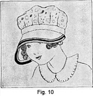Fig. 10 shows another attractive model with the wide brim in front, disappearing as it reaches the back. This little hat or bonnet is easy to make and is especially nice for it shades the eyes and is so appropriate for play time wear. The crown is soft and is made of figured cotton material. A piece of heavy muslin may be used to make a little better foundation or crinoline may be cut the same size as the outside material and basted together at the edges. The brim could be made of buckram and the crown material carefully plaited to fit the headsize. Ribbon could be used to cover the joining or a piece of the material cut on the bias.
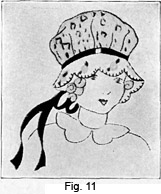Fig. 11 could be made without a heavy foundation material. The crown could be made similar to Fig. 9 and the scalloped brim stiffened by means of crinoline or muslin inserted between the upper and lower covering. If you desire, the scalloped brim could be starched a little. This would make a nice play hat and could be easily laundered when it became necessary. Of course, if you wish to make it with the stiff foundation, follow the directions for making the rose petal hat. Notice the attractive touch of hand embroidery in each scalloped and blanket stitch, used to finish the edge.
If you will refer to some of the recent magazines, I am sure that you can find many more attractive styles. Often good ideas may be gained from the cuts in the newspapers, especially the advertising section.
Organdie Hats
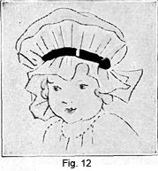I think Fig. 12 is so very attractive. This model is wide at the front and becomes narrow towards the back. Notice the attractive little frill which encircles the hat and gives it the baby style and still a wee touch of grown up air. The crown is full and may be made from a circle of material, if you do not have a pattern.
It is really hard to Choose exactly what to use to make this little hat. White or pastel shades of organdie are attractive—let us say yellow, orchid, blue or pink. It depends on the color of eyes and hair just what color should be selected. Dotted Swiss also makes up nicely either in all white or red or blue dotted material.
In order to finish these little hats in exactly the right way a piece of black velvet placed in the center of the frill is applied. This may be varied by the use of a bias fold of any color that will go well with the dress.
Some fashion companies have patterns for making many attractive kinds of hats for small children, but I am sure that you will be able to cut paper patterns and make the hats without the additional expense.
For the Baby and Infant
Very young people need hats, too, you know—and these hats are quite as important as mother's best! They are meant solely as head coverings, but everyone knows that they must have a certain amount of style.
Who ever heard of a baby's hat without dainty ruffles and bows—and at least one tiny flower? Who ever heard of infants' caps without plenty of lace and ribbons? They have a style of their own, these miniature designs in headgear.
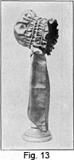For the tiny person whose head must be prettily covered with a cap, the shirred bonnet is best. It may be made of cashmere, bengaline, India silk or satin. For trimming it may boast white swansdown, lace, baby ribbons, ruchings or tiny flowers.
Of course hats and caps for babies can be purchased very easily ready-made, but what fond mother wants her little son or daughter to wear a factory-made hat when she can make it with her own fingers? A yard and a half of yard-wide silk is sufficient for the pretty bonnet pictured here. First you must cut the circular piece for the back, and then the bias strips for hood, ties and lining. Proceed according to these step-by-step directions and you will have no trouble.
1. From a corner of the silk, cut a circular piece 12 inches in diameter. This is for the back. The bonnet we are going to make here is for a child from one to two years of age; for a younger child, or a child with an exceptionally small head, you can make the circular piece 10 or 11 inches in diameter.
2. One-half inch from the edge, all around the circular piece you have just prepared, run a shirring thread and draw up the circle on this thread until it measures 20 inches. It should fit the child's head comfortably.
3. Now take the measurement for the bonnet. Place one end of the material at the point in the middle of the neck on one side, measure the material up across the ear, over the top of the head, down across the other ear to the middle of the neck on the opposite side. This measurement is usually from sixteen to eighteen inches.
4. Fold the material in such manner that a perfect bias can be cut with as little waste as possible. The bias edge should measure at least 36 inches.
5. From the 36-inch bias edge cut a strip of silk measuring 8 inches. This should be cut on the selvedge and used for one tie and loops at the side of the bonnet.
6. Now cut another bias strip measuring 10 inches wide and 26 inches long when cut off square at the ends. Use this strip for the shirred piece that fits over the top of the head. Let us see exactly how this shirred piece is made.
7. The strip is shirred over the cords. Turn one bias edge under to a depth of 11/4 inches.
8. On the upper or outer side of the silk, make a quarter inch tuck over a cording. The raw edge should be sewed fast by the row of stitching forming the tuck. The material is simply doubled over the cord, the line of stitching being run parallel to the cord and through all three thicknesses of the material. This will form a cord and a double ruffle. The ruffle finishes the bonnet around the face. The cord, however, must not be sewed fast, as it must be free to slip inside the tuck. You may find it easier to make a tuck and then draw the cord through this.
9. Now turn the other edge under one-half inch in the same manner and proceed to make the second tuck. The stitching of this tuck being just far enough from the turned edge to make a tuck large enough to accommodate the cord.
10. Two additional tucks must now be made at equal distances between the first two. Be sure that the cords you use are at least 24 inches long.
11. Draw up the cord in the second tuck you made—the tuck at the bottom of the piece. Tie the ends together forming a circle 20 inches around.
12. Draw up the material in the other tucks, but do not tie them. The tuck immediately above the one you have just pre pared should be drawn up to measure 17 inches from one end to the other. The tuck above this one is drawn up to 161/2 inches.
13. Now find the center of the cap at the top of the back tuck. This will be 10 inches from the joining at the back of the neck. Stick a pin in the silk to indicate this point.
14. Mark also with pins the middle points at both the right and left sides. These points will be 5 inches from the joining of the cord at the back.
15. Divide the circumference of the circular piece that forms the back of the bonnet into four equal parts, being sure that you first even up the shirring.
16. Sew this circular piece to the back of the shirred piece, along the line of the last tuck, the tuck which is 20 inches around. Use short, neat stitches.
17. Fit the bonnet to the child's head and draw up or let out the fullness on the cords as you find necessary. Now cut the ends of the cords off even with the edge of the material. Sew them down firmly so that they cannot pull out of the tucks.
18. Finish the ends of the tucked strip with neat half-inch hems and the shirred piece and the top of the hat is finished.
19. You already have one tie. The second is cut from the silk 8 inches on the selvedge which will make it 6 1/2 inches across from one bias cut to the other. The strips for the ties should be 36 inches long—20 inches being for the tie and the remaining 16 inches being for the rosettes at the sides.
20. Hem both ties on the sewing machine, or with fine hand made hems. Hem the bottom also, with hems of the same width.
21. Arrange the top 16 inches of the tie into four or five small loops, arranging them attractively in the form of a rosette. Attach firmly to the bonnet at the sides, near the corners.
22. You must now make a lining for the bonnet. From the silk or material still remaining, cut a strip of bias sufficiently deep to line the bonnet. Sew into the front at the first cord with a neat buttonhole stitch.
23. Now turn the lining back over the stitching and allow plenty of fullness for the inside of the cap. Attach to the back with tiny overhanding stitches.
The little bonnet you have finished may be made of silk, cotton, velvet, almost any material you desire. After a little practice you should be able to make pretty hats like these quickly and easily—adding original touches that make the little hats more charming than those that can be purchased ready made. Don't let this lesson slip by without mastering it thoroughly.
LESSON 21
QUESTIONS
1. Why should bonnets be trimmed simply and lined with soft mull or silk?
2. What hat is appropriate for school wear and what kind for dress up occasions?
3. What is meant by block hats?
4. The routine of the work in making a child's poke bonnet and one for a grown person is similar except for what one point?
5. What is the difference between a tam made for children and one for the grown person?